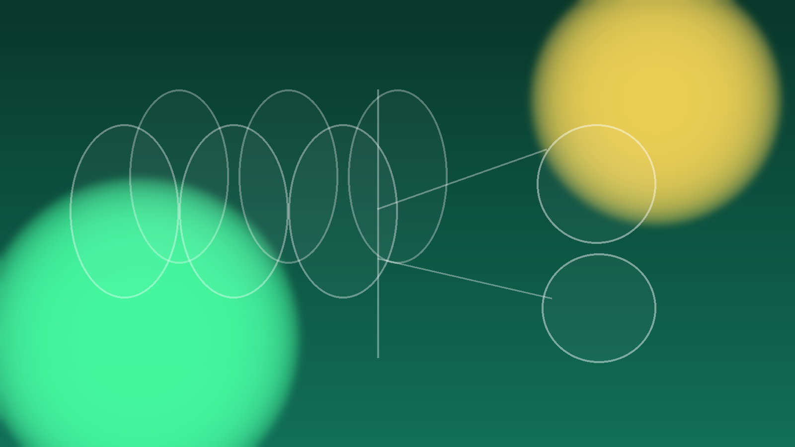

Demonstrate HTML, CSS and JavaScript skills
Build a complete multi-page website with clean styling and navigation.

COS30045 — Data Visualisation
A demonstration website built for Exercise 0.2 at Swinburne University of Technology.
Main goals of the site.
Build a complete multi-page website with clean styling and navigation.
Commit files regularly and manage the project structure correctly.
Create a solid foundation for charts and data-driven enhancements in later exercises.
Ensure the layout remains readable across different screen sizes.
Core tools behind the project.
| HTML5 | Page structure and semantic markup |
|---|---|
| CSS3 | Styling, layout and responsive design |
| JavaScript | Navigation and page interactivity |
| Chart-ready data | CSV source for later visualisation work |
| GitHub | Version control and hosting workflow |
Core requirements reflected in the site structure.
| Requirement | Status |
|---|---|
| Three pages — Home, Televisions, About Us | Complete |
| Top navigation menu using JavaScript | Complete |
| Power logo in top-left corner, returns to Home | Complete |
| Mouse-over feedback on navigation links | Complete |
| Active page indicator in navigation | Complete |
| CSS styling with colours matching the logo | Complete |
| Footer with year and name | Complete |
| Placeholder content related to appliance energy consumption | Complete |
| Recommended folder structure | Complete |